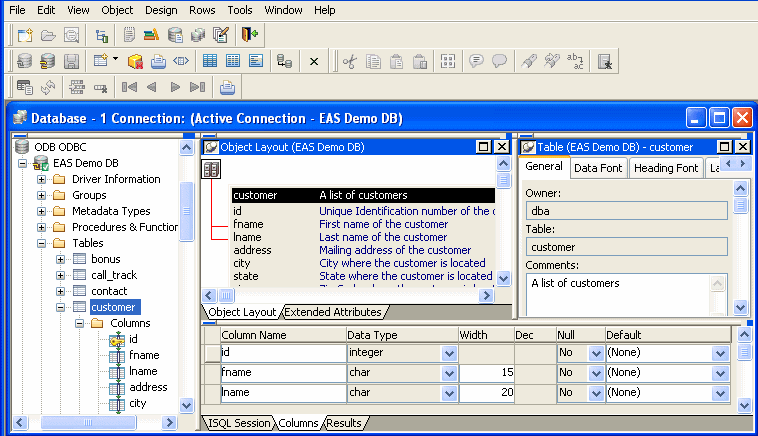

Previous Next
Using the Database painter
To open the Database painter, click the Database button in the PowerBar.
About the painter
Like the other PowerBuilder painters, the Database painter contains
a menu bar, customizable PainterBars, and several views. All database-related
tasks that you can do in PowerBuilder can be done in the Database painter.

Views in the Database painter
Table 16-1 lists
the views available in the Database painter.
Table 16-1: Database painter views
| View |
Description |
|---|
| Activity Log |
Displays the SQL syntax
generated by the actions you execute. |
| Columns |
Used to create and/or modify
a table's columns. |
| Extended Attributes |
Lists the display formats, edit styles,
and validation rules defined for the selected database connection. |
| Interactive SQL |
Used to build, execute, or explain SQL. |
| Object Details |
Displays an object's properties.
For some objects, its properties are read-only; for others, properties
can be modified.This view is analogous to the Properties view in other
painters. |
| Object Layout |
Displays a graphical representation of
tables and their relationships. |
| Objects |
Lists database interfaces and profiles. For
an active database connection, might also list all or some of the
following objects associated with that database: groups, metadata types,
procedures and functions, tables, columns, primary and foreign keys,
indexes, users, views, driver information, events, triggers, and
utilities (the database components listed depend on the database
and your user privileges). |
| Results |
Displays data in a grid, table, or freeform
format. |
Dragging and dropping
You can select certain database objects from the Objects view
and drag them to the Object Details, Object Layout, Columns, and/or ISQL views. Just position the pointer
on the database object's icon and drag it to the appropriate view.
Table 16-2: Using drag and drop in the Database painter
| Object |
Can be dragged to |
|---|
| Driver, group, metadata type, procedure
or function, table, column, user, primary or foreign key, index,
event trigger |
Object Details view |
| Table or view |
Object Layout view |
| Table or column |
Columns view |
| Procedure or view |
ISQL view |
Database painter tasks
Table 16-3 describes
how to do some basic tasks in the Database painter. Most of these tasks
begin in the Objects view. Many can be accomplished by dragging
and dropping objects into different views. If you prefer, you can
use buttons or menu selections from the menu bar or from pop-up
menus.
Table 16-3: Common tasks in the Database painter
| To |
Do this |
|---|
| Modify a database profile |
Highlight a database profile and select
Properties from the Object or pop-up menu or use the Properties
button. You can use the Import and Export Profiles menu selections
to copy profiles. For more information, see the section on importing
and exporting database profiles in Connecting to Your
Database
. |
| Connect to a database |
Highlight a database profile and then
select Connect from the File or pop-up menu or use the Connect button. With
File>Recent Connections, you can review and return to earlier
connections. You can also make database connections using the Database
Profile button. |
| Create new profiles, tables, views, columns, keys,
indexes, or groups |
Highlight the database object and select
New from the Object or pop-up menu or use the Create button. |
| Modify database objects |
Drag the object to the Object Details
view. |
| Graphically display tables |
Drag the table icon from the list in
the Objects view to the Object Layout view, or highlight the table
and select Add To Layout from the Object or pop-up menu. |
| Manipulate data |
Highlight the table and select Grid,
Tabular, or Freeform from the Object>Data menu or the pop-up
menu Edit Data item, or use the appropriate Data Manipulation button. |
| Build, execute or explain SQL |
Use the ISQL view
to build SQL statements. Use
the Paste SQL button to paste SELECT, INSERT, UPDATE, and DELETE statements
or type them directly into the view's workspace. To execute or
explain SQL, select Execute SQL and Explain SQL from
the Design or pop-up menu. |
| Define or modify extended attributes |
Select from the Object>Insert
menu the type of extended attribute you want to define or modify,
or highlight the extended attribute from the list in the Extended Attributes
view and select New or Properties from the pop-up menu. |
| Specify extended attributes for a column |
Drag the column to the Object Details
view and select the Extended Attributes tab. |
| Access database utilities |
Double-click a utility in the Objects
view to launch it. |
| Log your work |
Select Design>Start Log from
the menu bar. To see the SQL syntax
generated, display the Activity Log view. |
Modifying database preferences
To modify database preferences, select Design>Options
from the menu bar. Some preferences are specific to the database
connection; others are specific to the Database painter.
Preferences on the General
property page
The Connect To Default Profile, Shared Database Profiles,
Keep Connection Open, Use Extended Attributes, and Read Only preferences
are specific to the database connection.
The remaining preferences are specific to the Database painter.
For information about modifying these preferences, see Connecting
to Your Database
.
Table 16-4: Database painter preferences
| Database preference |
What PowerBuilder does
with the specified preference |
|---|
| Columns in the Table List |
When PowerBuilder displays tables graphically,
eight table columns display unless you change the number of columns. |
| SQL Terminator Character |
PowerBuilder uses the semicolon as the SQL statement terminator unless you
enter a different terminator character in the box. Make sure that
the character you choose is not reserved for another use by your
database vendor. For example, using the slash character (/)
causes compilation errors with some DBMSs. |
| Refresh Table List |
When PowerBuilder first displays a table
list, PowerBuilder retrieves the table list from the database and
displays it. To save time, PowerBuilder saves this list internally
for reuse to avoid regeneration of very large table lists. The table
list is refreshed every 30 minutes (1800 seconds) unless you specify
a different refresh rate. |
Preferences on the Object
Colors property page
You can set colors separately for each component of the Database painter's graphical
table representation: the table header, columns, indexes, primary
key, foreign keys, and joins. Set a color preference by selecting
a color from a drop-down list.
You can design custom colors that you can use when you select
color preferences. To design custom colors, select Design>Custom
Colors from the menu bar and work in the Custom Colors dialog box.
Logging your work
As you work with your database, you generate SQL statements. As you define a new
table, for example, PowerBuilder builds a SQL CREATE TABLE statement
internally. When you click the Create button, PowerBuilder sends the SQL statement to the DBMS to create
the table. Similarly, when you add an index, PowerBuilder builds a CREATE
INDEX statement.
You can see all SQL generated
in a Database painter session in the Activity Log view. You can also save
this information to a file. This allows you to have a record of
your work and makes it easy to duplicate the work if you need to create
the same or similar tables in another database.
 To start logging your work:
To start logging your work:
Open the Database painter.
Select Start Log from the Design menu or the pop-up
menu in the Activity Log view.
PowerBuilder begins sending all generated syntax to the Activity
Log view.
To stop the log:
Select Stop Log from the Design menu or the
pop-up menu in the Activity Log view.
PowerBuilder stops sending the generated syntax to the Activity
Log view. Your work is no longer logged.
To save the log to a permanent text file:
Select Save or Save As from the File menu.
Name the file and click Save. The default file
extension is SQL, but you can change that if
you want to.
 Submitting the log to your DBMS You can open a saved log file and submit it to your DBMS in
the ISQL view. For more information,
see "Building and executing SQL statements".
Submitting the log to your DBMS You can open a saved log file and submit it to your DBMS in
the ISQL view. For more information,
see "Building and executing SQL statements".